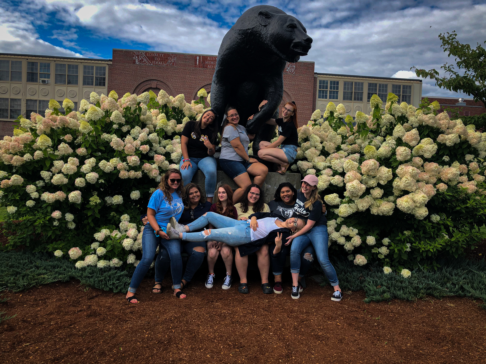
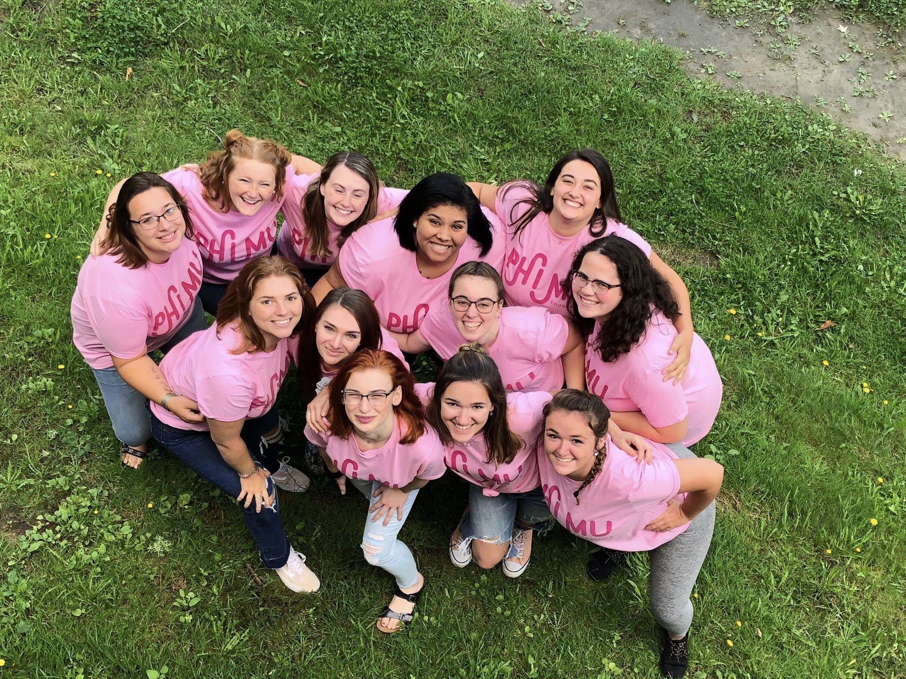
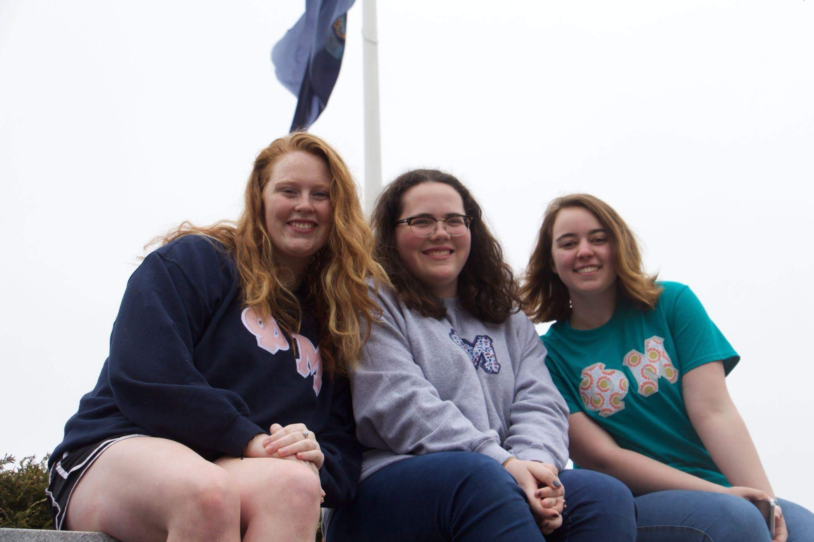
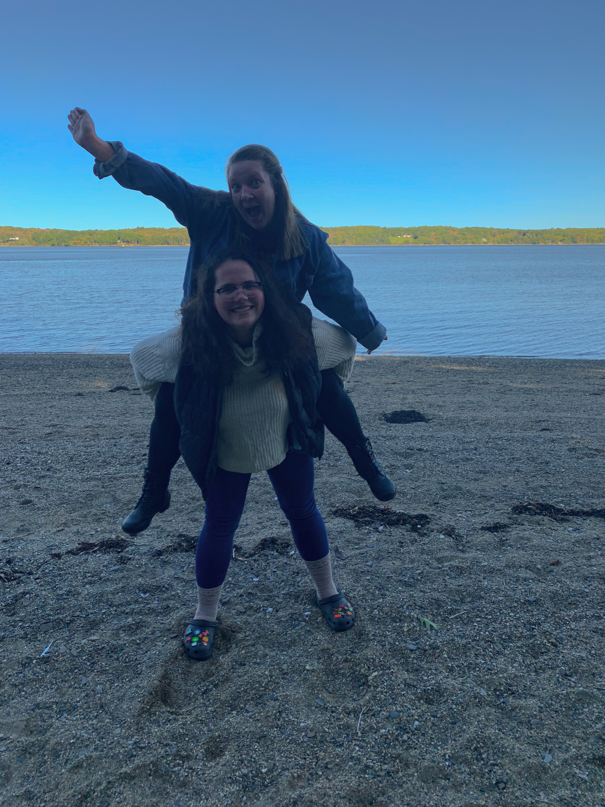
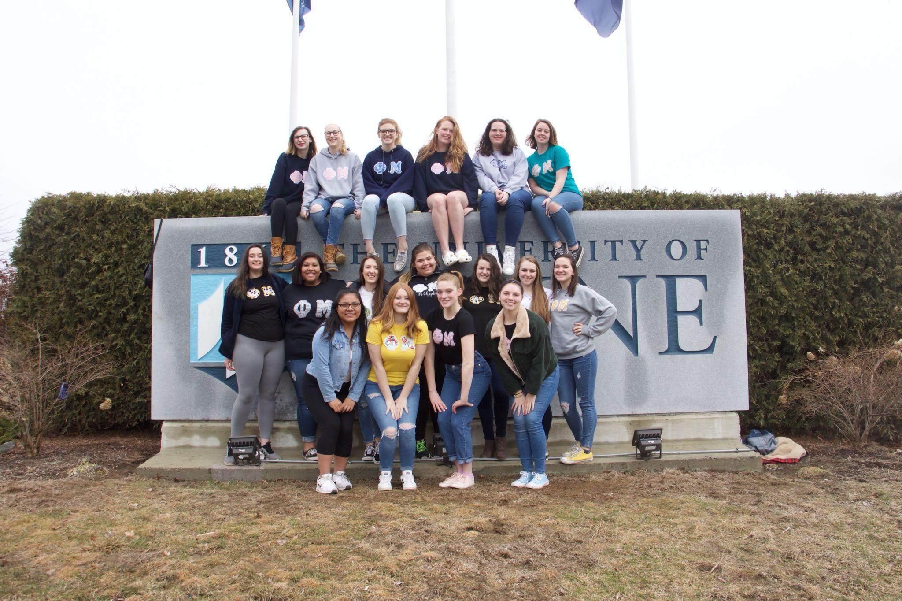

Liz's Sorority Experience
During her freshman orientation in the Summer of 2018, on a whim Liz signed up for Sorority Formal Recruitment. This was very out of character for Liz who was quite the introvert and didn't really fit in with people who she thought were in sororities, but she decided what the heck why not, if I hate it I don't have to commit to it. Then came recruitment in the fall of that same year. That one week was probably the single most overwhelming thing that Liz had experienced up to that point in her life. There were dozens of girls in most of the rooms, all cheering and clapping, wearing outfits that were pretty much identical and all talking up a storm.
After the first two days of actually meeting the sororities, everyone going through recruitment ranked their list of sororities and went back to their dorms or apartments, waiting for the next day to find out who wanted them back. The rest of recruitment ended every day with ranking of lists, and by bid day, Liz had been offered a bid to Phi Mu.
  Liz then went through the new member process, and in November of 2018 was initiated into Phi Mu. Since then, she has sprained both of her ankles by jumping off the UMaine sign after having her picture taken, missed the Spring initiation because of said ankle injuries, gone through recruitment again in Fall 2019 on the sister side of recruitment, which is a whole different kind of crazy, and is considering running for an executive position for the upcoming Executive Board Elections in December.
 Through Phi Mu, Liz has found forever friends, made life long memories, and maybe in the near future will have a leadership position.